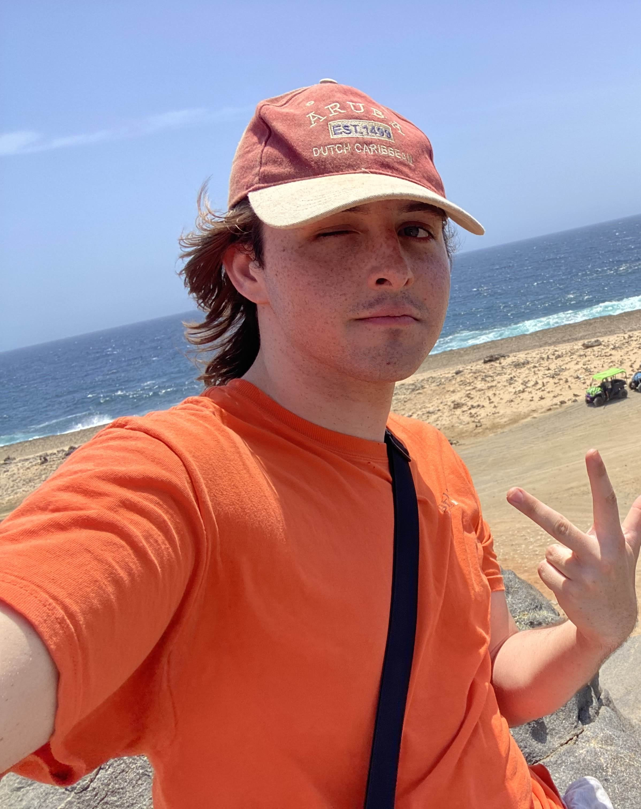

Ethan is an audio engineer and music producer based in the NYC metro area specializing in studio production, live sound engineering, as well as recording and editing for film and television.
He is currently completing a Bachelor's degree in Music Production at Ramapo College of New Jersey, studying advanced engineering techniques and applying them in a wide variety of contexts. Ethan has experience in audio and music production from student film projects to full band ensembles, and has studied and interned under esteemed jazz drummer Bobby Previte.
In addition to audio engineering, Ethan is the manager of Ramapo's FM radio station, 90.3 WRPR. There, he oversees the functionality and maintenance of broadcasting equipment with David Antoine, as well as collaborating with student DJs with hosting their own freeform radio shows.
Ethan produces, mixes, and masters his own music under the name "twzzl", which can be found on all major streaming platforms. Outside of music, some of his many hobbies include writing, photography, video editing, and programming.
